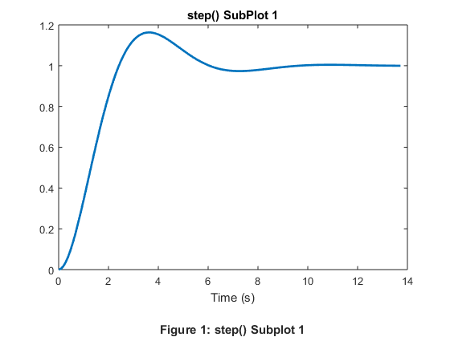
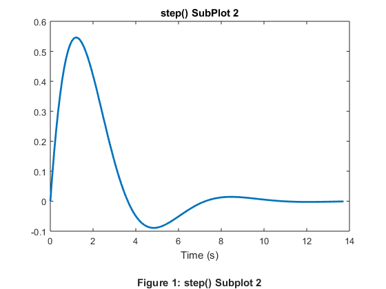
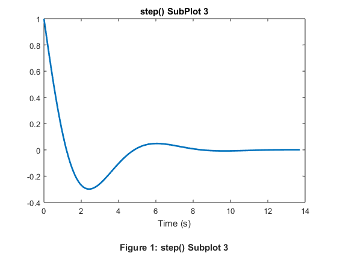
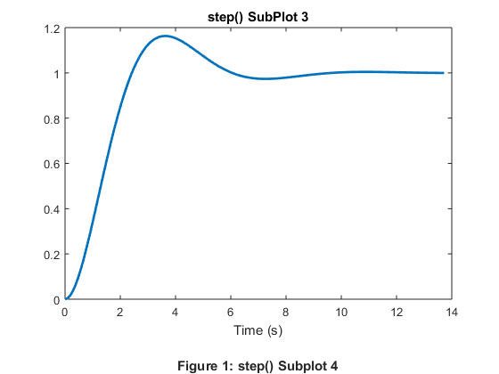
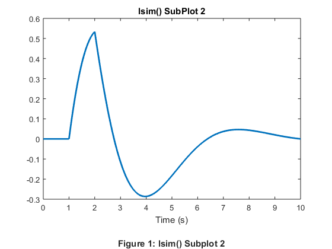
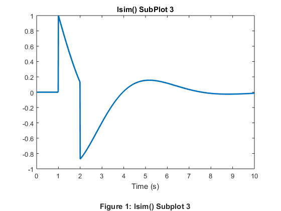
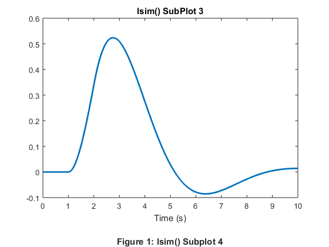

Contents
3
% Given Values k = 1; % Spring constant (N/m) b = 1; % Drag constant (N*s/m) m = 1; % Mass (N*s^2/m) aka (kg) % Matrices A, B, C, D A = [0, 1; -k/m, -b/m]; B = [0; 1/m]; C = [1, 0; 0, 1; -k/m, -b/m; k, 0]; D = [0; 0; 1/m; 0]; % State Space System Object sys = ss(A, B, C, D);
4
EXPLAIN MEANING OF EACH SUBPLOT
% Simulate a Step Response
[y, t] = step(sys);
% Plot step() SubPlot 1 plot(t, y(:, 1), 'LineWidth', 2); title('step() SubPlot 1'); xlabel({'Time (s)' '' % Figure label '\bfFigure 1: step() Subplot 1'}); ylabel('');
% Plot step() SubPlot 2 plot(t, y(:, 2), 'LineWidth', 2); title('step() SubPlot 2'); xlabel({'Time (s)' '' % Figure label '\bfFigure 1: step() Subplot 2'}); ylabel('');
% Plot step() SubPlot 3 plot(t, y(:, 3), 'LineWidth', 2); title('step() SubPlot 3'); xlabel({'Time (s)' '' % Figure label '\bfFigure 1: step() Subplot 3'}); ylabel('');
% Plot step() SubPlot 4 plot(t, y(:, 4), 'LineWidth', 2); title('step() SubPlot 3'); xlabel({'Time (s)' '' % Figure label '\bfFigure 1: step() Subplot 4'}); ylabel('');
5
t = (0:0.01:10)'; % Create a column vector representing time u = zeros(size(t)); % Create a empty input vector u(t >= 1) = u(t >= 1) + 1; % Add 1 to each value in u where t >= 1 u(t >= 2) = u(t >= 2) - 1; % Subtract 1 from u where t >= 2
6
% Run simulation with the specified input: u
[y, t, x] = lsim(sys, u, t);
% Plot lsim() SubPlot 1 plot(t, y(:, 1), 'LineWidth', 2); title('lsim() SubPlot 1'); xlabel({'Time (s)' '' % Figure label '\bfFigure 1: lsim() Subplot 1'}); ylabel('');
% Plot lsim() SubPlot 2 plot(t, y(:, 2), 'LineWidth', 2); title('lsim() SubPlot 2'); xlabel({'Time (s)' '' % Figure label '\bfFigure 1: lsim() Subplot 2'}); ylabel('');
% Plot lsim() SubPlot 3 plot(t, y(:, 3), 'LineWidth', 2); title('lsim() SubPlot 3'); xlabel({'Time (s)' '' % Figure label '\bfFigure 1: lsim() Subplot 3'}); ylabel('');
% Plot lsim() SubPlot 4 plot(t, y(:, 4), 'LineWidth', 2); title('lsim() SubPlot 3'); xlabel({'Time (s)' '' % Figure label '\bfFigure 1: lsim() Subplot 4'}); ylabel('');